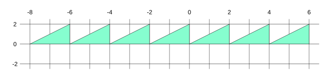

本文将介绍一些你可能想要计时的性能相关内容。我们将对以下三个方面进行计时：
首先，我们以顶点缓冲区文章中的一个圆形示例为基础，并将其修改为带动画效果的版本，这样就能更直观地看到各项操作的耗时变化。
在那个示例中，我们有 3 个顶点缓冲区。第一个用于圆形的顶点位置和亮度。第二个用于每个实例的静态属性，包括圆形的偏移量和颜色。第三个用于每次渲染时都会变化的数据，这里是缩放值，用于在用户调整窗口大小时保持圆形的宽高比，使圆形保持为正圆而非椭圆。
我们希望让它们动起来，所以先把偏移量移到和缩放值同一个缓冲区中。首先修改渲染管线，将偏移量移到与缩放值相同的缓冲区。
const pipeline = device.createRenderPipeline({
label: 'per vertex color',
layout: 'auto',
vertex: {
module,
buffers: [
{
arrayStride: 2 * 4 + 4, // 2 个 float，每个 4 字节 + 4 字节
attributes: [
{shaderLocation: 0, offset: 0, format: 'float32x2'}, // position
{shaderLocation: 4, offset: 8, format: 'unorm8x4'}, // perVertexColor
],
},
{
- arrayStride: 4 + 2 * 4, // 4 字节 + 2 个 float，每个 4 字节
+ arrayStride: 4, // 4 字节
stepMode: 'instance',
attributes: [
{shaderLocation: 1, offset: 0, format: 'unorm8x4'}, // color
- {shaderLocation: 2, offset: 4, format: 'float32x2'}, // offset
],
},
{
- arrayStride: 2 * 4, // 2 个 float，每个 4 字节
+ arrayStride: 4 * 4, // 4 个 float，每个 4 字节
stepMode: 'instance',
attributes: [
- {shaderLocation: 3, offset: 0, format: 'float32x2'}, // scale
+ {shaderLocation: 2, offset: 0, format: 'float32x2'}, // offset
- {shaderLocation: 3, offset: 0, format: 'float32x2'}, // scale
+ {shaderLocation: 3, offset: 8, format: 'float32x2'}, // scale
],
},
],
},
fragment: {
module,
targets: [{ format: presentationFormat }],
},
});
然后修改顶点缓冲区的设置部分，将偏移量和缩放值放到一起。
// 创建 2 个顶点缓冲区
const staticUnitSize =
- 4 + // color 占 4 字节
- 2 * 4; // offset 占 2 个 32 位 float（每个 4 字节）
+ 4; // color 占 4 字节
const changingUnitSize =
- 2 * 4; // scale 占 2 个 32 位 float（每个 4 字节）
+ 2 * 4 + // offset 占 2 个 32 位 float（每个 4 字节）
+ 2 * 4; // scale 占 2 个 32 位 float（每个 4 字节）
const staticVertexBufferSize = staticUnitSize * kNumObjects;
const changingVertexBufferSize = changingUnitSize * kNumObjects;
const staticVertexBuffer = device.createBuffer({
label: 'static vertex for objects',
size: staticVertexBufferSize,
usage: GPUBufferUsage.VERTEX | GPUBufferUsage.COPY_DST,
});
const changingVertexBuffer = device.createBuffer({
label: 'changing storage for objects',
size: changingVertexBufferSize,
usage: GPUBufferUsage.VERTEX | GPUBufferUsage.COPY_DST,
});
// 各 uniform 值在 float32 数组中的偏移量（以索引计）
const kColorOffset = 0;
- const kOffsetOffset = 1;
+
- const kScaleOffset = 0;
+ const kOffsetOffset = 0;
+ const kScaleOffset = 2;
{
const staticVertexValuesU8 = new Uint8Array(staticVertexBufferSize);
- const staticVertexValuesF32 = new Float32Array(staticVertexValuesU8.buffer);
for (let i = 0; i < kNumObjects; ++i) {
const staticOffsetU8 = i * staticUnitSize;
- const staticOffsetF32 = staticOffsetU8 / 4;
// 这些值只设置一次，所以现在设置
staticVertexValuesU8.set( // 设置颜色
[rand() * 255, rand() * 255, rand() * 255, 255],
staticOffsetU8 + kColorOffset);
- staticVertexValuesF32.set( // 设置偏移量
- [rand(-0.9, 0.9), rand(-0.9, 0.9)],
- staticOffsetF32 + kOffsetOffset);
objectInfos.push({
scale: rand(0.2, 0.5),
+ offset: [rand(-0.9, 0.9), rand(-0.9, 0.9)],
+ velocity: [rand(-0.1, 0.1), rand(-0.1, 0.1)],
});
}
- device.queue.writeBuffer(staticVertexBuffer, 0, staticVertexValuesF32);
+ device.queue.writeBuffer(staticVertexBuffer, 0, staticVertexValuesU8);
}
在渲染时，我们可以根据速度更新圆形的偏移量，然后将它们上传到 GPU。
+ const euclideanModulo = (x, a) => x - a * Math.floor(x / a);
+ let then = 0;
- function render() {
function render(now) {
+ now *= 0.001; // 转换为秒
+ const deltaTime = now - then;
+ then = now;
...
// 为每个对象设置缩放值
- objectInfos.forEach(({scale}, ndx) => {
- const offset = ndx * (changingUnitSize / 4);
- vertexValues.set([scale / aspect, scale], offset + kScaleOffset); // 设置缩放值
+ objectInfos.forEach(({scale, offset, veloctiy}, ndx) => {
+ // -1.5 到 1.5
+ offset[0] = euclideanModulo(offset[0] + velocity[0] * deltaTime + 1.5, 3) - 1.5;
+ offset[1] = euclideanModulo(offset[1] + velocity[1] * deltaTime + 1.5, 3) - 1.5;
+ const off = ndx * (changingUnitSize / 4);
+ vertexValues.set(offset, off + kOffsetOffset);
+ vertexValues.set([scale / aspect, scale], off + kScaleOffset);
});
...
+ requestAnimationFrame(render);
}
+ requestAnimationFrame(render);
const observer = new ResizeObserver(entries => {
for (const entry of entries) {
const canvas = entry.target;
const width = entry.contentBoxSize[0].inlineSize;
const height = entry.contentBoxSize[0].blockSize;
canvas.width = Math.max(1, Math.min(width, device.limits.maxTextureDimension2D));
canvas.height = Math.max(1, Math.min(height, device.limits.maxTextureDimension2D));
- // 重新渲染
- render();
}
});
observer.observe(canvas);
我们还改用了 rAF 循环 [1]。
上面的代码使用 euclideanModulo 来更新偏移量。
euclideanModulo 返回除法余数，但余数始终为正数，而 % 运算符返回的余数与被除数同号。
例如
换句话说，下面是 % 运算符与 euclideanModulo 的图形对比

因此，上面的代码先取偏移量（在裁剪空间中），然后加上 1.5。再对 3 取 euclideanModulo，这会得到一个被包裹在 0.0 到 3.0 之间的数，然后再减去 1.5。这样就得到了保持在 -1.5 到 +1.5 之间的数，并且会在边界处回绕到另一侧。我们使用 -1.5 到 +1.5，是为了确保圆形只有在离开屏幕后才开始回绕。[2]
为了让结果可以调节，我们让可以设置要绘制的圆形数量。
- const kNumObjects = 100;
+ const kNumObjects = 10000;
...
const settings = {
numObjects: 100,
};
const gui = new GUI();
gui.add(settings, 'numObjects', 0, kNumObjects, 1);
...
// 为每个对象设置缩放值和偏移量
- objectInfos.forEach(({scale, offset, veloctiy}, ndx) => {
+ for (let ndx = 0; ndx < settings.numObjects; ++ndx) {
+ const {scale, offset, velocity} = objectInfos[ndx];
// -1.5 到 1.5
offset[0] = euclideanModulo(offset[0] + velocity[0] * deltaTime + 1.5, 3) - 1.5;
offset[1] = euclideanModulo(offset[1] + velocity[1] * deltaTime + 1.5, 3) - 1.5;
const off = ndx * (changingUnitSize / 4);
vertexValues.set(offset, off + kOffsetOffset);
vertexValues.set([scale / aspect, scale], off + kScaleOffset);
- };
+ }
// 一次性上传所有偏移量和缩放值
- device.queue.writeBuffer(changingVertexBuffer, 0, vertexValues);
+ device.queue.writeBuffer(
+ changingVertexBuffer, 0,
+ vertexValues, 0, settings.numObjects * changingUnitSize / 4);
- pass.draw(numVertices, kNumObjects);
+ pass.draw(numVertices, settings.numObjects);
现在我们就有了一个带动画效果的示例，并且可以通过设置圆的数量来调整工作量。
在此基础上，我们再添加每秒帧数（fps）和 JavaScript 耗时。
首先，我们需要一种方式来显示这些信息，所以添加一个位于画布上方的 <pre> 元素。
<body>
<canvas></canvas>
+ <pre id="info"></pre>
</body>
html, body {
margin: 0; /* 移除默认外边距 */
height: 100%; /* 让 html,body 填满页面 */
}
canvas {
display: block; /* 让画布表现为块级元素 */
width: 100%; /* 让画布填满其容器 */
height: 100%;
}
+#info {
+ position: absolute;
+ top: 0;
+ left: 0;
+ margin: 0;
+ padding: 0.5em;
+ background-color: rgba(0, 0, 0, 0.8);
+ color: white;
+}
我们已经有了显示每秒帧数所需的数据，就是上面计算的 deltaTime。
对于 JavaScript 耗时，我们可以记录 requestAnimationFrame 开始和结束的时间。
let then = 0;
function render(now) {
now *= 0.001; // 转换为秒
const deltaTime = now - then;
then = now;
+ const startTime = performance.now();
...
+ const jsTime = performance.now() - startTime;
+ infoElem.textContent = `\
+fps: ${(1 / deltaTime).toFixed(1)}
+js: ${jsTime.toFixed(1)}ms
+`;
requestAnimationFrame(render);
}
requestAnimationFrame(render);
这样我们就得到了前两个计时指标。
WebGPU 提供了一个可选的 'timestamp-query' 特性来检查操作在 GPU 上所花费的时间。
由于它是一个可选特性，我们需要检查它是否存在，并像limits and features 文章中介绍的那样请求它。
async function main() {
const adapter = await navigator.gpu?.requestAdapter();
- const device = await adapter?.requestDevice();
+ const canTimestamp = adapter.features.has('timestamp-query');
+ const device = await adapter?.requestDevice({
+ requiredFeatures: [
+ ...(canTimestamp ? ['timestamp-query'] : []),
+ ],
+ });
if (!device) {
fail('need a browser that supports WebGPU');
return;
}
上面，我们根据适配器是否支持 'timestamp-query' 特性，将 canTimestamp 设置为 true 或 false。如果支持，我们就在创建设备时请求该特性。
启用了该特性后，我们可以向 WebGPU 请求渲染通道或计算通道的时间戳。你可以通过创建一个 GPUQuerySet 并将其添加到计算通道或渲染通道中来实现这一点。GPUQuerySet 实际上是一个查询结果数组。你告诉 WebGPU 要将通道开始的时间记录到数组的哪个元素，以及将通道结束的时间记录到哪个元素。然后你可以将这些时间戳复制到一个缓冲区，并映射该缓冲区以读取结果。[3]
所以，首先我们创建一个查询集。
const querySet = device.createQuerySet({
type: 'timestamp',
count: 2,
});
我们需要将 count 设为至少 2，这样我们才能写入开始和结束两个时间戳。
我们需要一个缓冲区来将 querySet 的信息转换为我们可以访问的数据。
const resolveBuffer = device.createBuffer({
size: querySet.count * 8,
usage: GPUBufferUsage.QUERY_RESOLVE | GPUBufferUsage.COPY_SRC,
});
querySet 中的每个元素占 8 字节。
我们需要给它设置 QUERY_RESOLVE 用法，并且，如果我们想能够在 JavaScript 中读取结果，还需要 COPY_SRC 用法，这样我们才能将结果复制到可映射缓冲区。
最后，创建一个可映射的缓冲区来读取结果。
const resultBuffer = device.createBuffer({
size: resolveBuffer.size,
usage: GPUBufferUsage.COPY_DST | GPUBufferUsage.MAP_READ,
});
我们需要用一种方式包装这段代码，使得只有在特性存在时才创建这些对象，否则我们会因为尝试创建 'timestamp' 查询集而出错。
+ const { querySet, resolveBuffer, resultBuffer } = (() => {
+ if (!canTimestamp) {
+ return {};
+ }
const querySet = device.createQuerySet({
type: 'timestamp',
count: 2,
});
const resolveBuffer = device.createBuffer({
size: querySet.count * 8,
usage: GPUBufferUsage.QUERY_RESOLVE | GPUBufferUsage.COPY_SRC,
});
const resultBuffer = device.createBuffer({
size: resolveBuffer.size,
usage: GPUBufferUsage.COPY_DST | GPUBufferUsage.MAP_READ,
});
+ return {querySet, resolveBuffer, resultBuffer };
+ })();
在渲染通道描述符中，我们告诉它要使用的 querySet，以及要写入开始和结束时间戳的数组元素的索引。
const renderPassDescriptor = {
label: 'our basic canvas renderPass with timing',
colorAttachments: [
{
// view: <- 在渲染时填充
clearValue: [0.3, 0.3, 0.3, 1],
loadOp: 'clear',
storeOp: 'store',
},
],
...(canTimestamp && {
timestampWrites: {
querySet,
beginningOfPassWriteIndex: 0,
endOfPassWriteIndex: 1,
},
}),
};
上面，如果特性存在，我们就将 timestampWrites 部分添加到渲染通道描述符中，并传入 querySet，告诉它将开始时间写入第 0 个元素，将结束时间写入第 1 个元素。
在通道结束后，我们需要调用 resolveQuerySet。它接收查询集、要开始解析的查询集的第一个索引、要解析的条目数量、要解析到的缓冲区，以及该缓冲区中存储结果的偏移量。
pass.end();
+ if (canTimestamp) {
+ encoder.resolveQuerySet(querySet, 0, querySet.count, resolveBuffer, 0);
+ }
我们还希望将 resolveBuffer 复制到 resultBuffer，这样就可以映射它并在 JavaScript 中查看结果。但有一个问题：在 resultBuffer 被映射时我们不能复制到它。幸运的是，缓冲区有一个 mapState 属性可以检查。如果它被设置为 unmapped（初始值），就可以安全地复制。其他值有 'pending'（调用 mapAsync 的那一刻变成这个值）和 'mapped'（mapAsync 解析后变成这个值）。调用 unmap 后它会恢复为 'unmapped'。
if (canTimestamp) {
encoder.resolveQuerySet(querySet, 0, 2, resolveBuffer, 0);
+ if (resultBuffer.mapState === 'unmapped') {
+ encoder.copyBufferToBuffer(resolveBuffer, 0, resultBuffer, 0, resultBuffer.size);
+ }
}
提交命令缓冲区后，我们可以映射 resultBuffer。和上面一样，只有在它是 'unmapped' 时才映射。
+ let gpuTime = 0;
...
function render(now) {
...
const commandBuffer = encoder.finish();
device.queue.submit([commandBuffer]);
+ if (canTimestamp && resultBuffer.mapState === 'unmapped') {
+ resultBuffer.mapAsync(GPUMapMode.READ).then(() => {
+ const times = new BigUint64Array(resultBuffer.getMappedRange());
+ gpuTime = Number(times[1] - times[0]);
+ resultBuffer.unmap();
+ });
+ }
查询集的结果以纳秒为单位，存储在 64 位整数中。要在 JavaScript 中读取它们，我们可以使用 BigUint64Array 类型化数组视图。使用 BigUint64Array 需要特别小心。从 BigUint64Array 读取元素时，返回的类型是 bigint 而不是 number，所以你不能将它与许多数学函数一起使用。此外，当将它们转换为数字时可能会丢失精度，因为 number 只能容纳 53 位大小的整数。所以，我们首先用两个 bigint 相减（结果仍然是 bigint），然后再将结果转换为数字以便正常使用。
在上面的代码中，我们只是在 resultBuffer 未被映射时将结果复制到其中。这意味着我们只会在某些帧上读取时间。很可能每隔一帧读取一次，但并不能严格保证 mapAsync 解析需要多长时间。因此，我们更新 gpuTime，我们可以随时使用它来获取最后记录的时间。
infoElem.textContent = `\
fps: ${(1 / deltaTime).toFixed(1)}
js: ${jsTime.toFixed(1)}ms
+gpu: ${canTimestamp ? `${(gpuTime / 1000).toFixed(1)}µs` : 'N/A'}
`;
有了这些，我们就可以从 WebGPU 获取 GPU 时间了。
对我来说，这些数字变化太快，看不出什么有用的信息。解决这个问题的方法之一是计算滚动平均值。下面是一个帮助计算滚动平均值的类。
// 注意：我们不允许负值，因为这用于时间戳查询，
// 在这种情况下查询可能返回开始时间大于结束时间。
// 参见：https://gpuweb.github.io/gpuweb/#timestamp
class NonNegativeRollingAverage {
#total = 0;
#samples = [];
#cursor = 0;
#numSamples;
constructor(numSamples = 30) {
this.#numSamples = numSamples;
}
addSample(v) {
if (!Number.isNaN(v) && Number.isFinite(v) && v >= 0) {
this.#total += v - (this.#samples[this.#cursor] || 0);
this.#samples[this.#cursor] = v;
this.#cursor = (this.#cursor + 1) % this.#numSamples;
}
}
get() {
return this.#total / this.#samples.length;
}
}
它维护一个值数组和一个总和。当添加新值时，最旧的值从总和中减去，同时添加新值。
我们可以这样使用它。
+const fpsAverage = new NonNegativeRollingAverage();
+const jsAverage = new NonNegativeRollingAverage();
+const gpuAverage = new NonNegativeRollingAverage();
function render(now) {
...
const commandBuffer = encoder.finish();
device.queue.submit([commandBuffer]);
if (canTimestamp && resultBuffer.mapState === 'unmapped') {
resultBuffer.mapAsync(GPUMapMode.READ).then(() => {
const times = new BigUint64Array(resultBuffer.getMappedRange());
gpuTime = Number(times[1] - times[0]);
+ gpuAverage.addSample(gpuTime / 1000);
resultBuffer.unmap();
});
}
const jsTime = performance.now() - startTime;
+ fpsAverage.addSample(1 / deltaTime);
+ jsAverage.addSample(jsTime);
infoElem.textContent = `\
-fps: ${(1 / deltaTime).toFixed(1)}
-js: ${jsTime.toFixed(1)}ms
-gpu: ${canTimestamp ? `${(gpuTime / 1000).toFixed(1)}µs` : 'N/A'}
+fps: ${fpsAverage.get().toFixed(1)}
+js: ${jsAverage.get().toFixed(1)}ms
+gpu: ${canTimestamp ? `${gpuAverage.get().toFixed(1)}µs` : 'N/A'}
`;
requestAnimationFrame(render);
}
requestAnimationFrame(render);
}
现在数字稳定一些了。
对我来说，所有这些步骤都相当繁琐，而且可能很容易出错。我们需要创建 3 个东西：一个 querySet 和 2 个缓冲区。我们需要修改渲染通道描述符。我们需要解析结果并复制到可映射缓冲区。
减少这种繁琐工作的一种方法是编写一个辅助类来帮助我们完成计时。下面是一个可能有助于解决这些问题的辅助类的示例。
function assert(cond, msg = '') {
if (!cond) {
throw new Error(msg);
}
}
// 我们跟踪命令缓冲区，这样在尝试读取结果之前如果命令缓冲区未提交就会产生错误。
const s_unsubmittedCommandBuffer = new Set();
/* global GPUQueue */
GPUQueue.prototype.submit = (function(origFn) {
return function(commandBuffers) {
origFn.call(this, commandBuffers);
commandBuffers.forEach(cb => s_unsubmittedCommandBuffer.delete(cb));
};
})(GPUQueue.prototype.submit);
// 参见 https://webgpufundamentals.org/webgpu/lessons/webgpu-timing.html
export default class TimingHelper {
#canTimestamp;
#device;
#querySet;
#resolveBuffer;
#resultBuffer;
#commandBuffer;
#resultBuffers = [];
// 状态可以是 'free'、'need resolve'、'wait for result'
#state = 'free';
constructor(device) {
this.#device = device;
this.#canTimestamp = device.features.has('timestamp-query');
if (this.#canTimestamp) {
this.#querySet = device.createQuerySet({
type: 'timestamp',
count: 2,
});
this.#resolveBuffer = device.createBuffer({
size: this.#querySet.count * 8,
usage: GPUBufferUsage.QUERY_RESOLVE | GPUBufferUsage.COPY_SRC,
});
}
}
#beginTimestampPass(encoder, fnName, descriptor) {
if (this.#canTimestamp) {
assert(this.#state === 'free', 'state not free');
this.#state = 'need resolve';
const pass = encoder[fnName]({
...descriptor,
...{
timestampWrites: {
querySet: this.#querySet,
beginningOfPassWriteIndex: 0,
endOfPassWriteIndex: 1,
},
},
});
const resolve = () => this.#resolveTiming(encoder);
const trackCommandBuffer = (cb) => this.#trackCommandBuffer(cb);
pass.end = (function(origFn) {
return function() {
origFn.call(this);
resolve();
};
})(pass.end);
encoder.finish = (function(origFn) {
return function() {
const cb = origFn.call(this);
trackCommandBuffer(cb);
return cb;
};
})(encoder.finish);
return pass;
} else {
return encoder[fnName](descriptor);
}
}
beginRenderPass(encoder, descriptor = {}) {
return this.#beginTimestampPass(encoder, 'beginRenderPass', descriptor);
}
beginComputePass(encoder, descriptor = {}) {
return this.#beginTimestampPass(encoder, 'beginComputePass', descriptor);
}
#trackCommandBuffer(cb) {
if (!this.#canTimestamp) {
return;
}
assert(this.#state === 'need finish', 'you must call encoder.finish');
this.#commandBuffer = cb;
s_unsubmittedCommandBuffer.add(cb);
this.#state = 'wait for result';
}
#resolveTiming(encoder) {
if (!this.#canTimestamp) {
return;
}
assert(
this.#state === 'need resolve',
'you must use timerHelper.beginComputePass or timerHelper.beginRenderPass',
);
this.#state = 'need finish';
this.#resultBuffer = this.#resultBuffers.pop() || this.#device.createBuffer({
size: this.#resolveBuffer.size,
usage: GPUBufferUsage.COPY_DST | GPUBufferUsage.MAP_READ,
});
encoder.resolveQuerySet(this.#querySet, 0, this.#querySet.count, this.#resolveBuffer, 0);
encoder.copyBufferToBuffer(this.#resolveBuffer, 0, this.#resultBuffer, 0, this.#resultBuffer.size);
}
async getResult() {
if (!this.#canTimestamp) {
return 0;
}
assert(
this.#state === 'wait for result',
'you must call encoder.finish and submit the command buffer before you can read the result',
);
assert(!!this.#commandBuffer); // 内部检查
assert(
!s_unsubmittedCommandBuffer.has(this.#commandBuffer),
'you must submit the command buffer before you can read the result',
);
this.#commandBuffer = undefined;
this.#state = 'free';
const resultBuffer = this.#resultBuffer;
await resultBuffer.mapAsync(GPUMapMode.READ);
const times = new BigUint64Array(resultBuffer.getMappedRange());
const duration = Number(times[1] - times[0]);
resultBuffer.unmap();
this.#resultBuffers.push(resultBuffer);
return duration;
}
}
添加这些 assert 是为了帮助我们不要错误地使用这个类。例如，如果我们结束了通道但没有解析它，或者如果我们解析了它并尝试读取结果但还没有提交。
有了这个类，我们可以删除之前的大部分代码。
async function main() {
const adapter = await navigator.gpu?.requestAdapter();
const canTimestamp = adapter.features.has('timestamp-query');
const device = await adapter?.requestDevice({
requiredFeatures: [
...(canTimestamp ? ['timestamp-query'] : []),
],
});
if (!device) {
fail('need a browser that supports WebGPU');
return;
}
+ const timingHelper = new TimingHelper(device);
...
- const { querySet, resolveBuffer, resultBuffer } = (() => {
- if (!canTimestamp) {
- return {};
- }
-
- const querySet = device.createQuerySet({
- type: 'timestamp',
- count: 2,
- });
- const resolveBuffer = device.createBuffer({
- size: querySet.count * 8,
- usage: GPUBufferUsage.QUERY_RESOLVE | GPUBufferUsage.COPY_SRC,
- });
- const resultBuffer = device.createBuffer({
- size: resolveBuffer.size,
- usage: GPUBufferUsage.COPY_DST | GPUBufferUsage.MAP_READ,
- });
- return {querySet, resolveBuffer, resultBuffer };
- })();
...
function render(now) {
...
- const pass = encoder.beginRenderPass(renderPassDescriptor);
+ const pass = timingHelper.beginRenderPass(encoder, renderPassDescriptor);
...
pass.end();
- if (canTimestamp) {
- encoder.resolveQuerySet(querySet, 0, querySet.count, resolveBuffer, 0);
- if (resultBuffer.mapState === 'unmapped') {
- encoder.copyBufferToBuffer(resolveBuffer, 0, resultBuffer, 0, resultBuffer.size);
- }
- }
const commandBuffer = encoder.finish();
device.queue.submit([commandBuffer]);
+ timingHelper.getResult().then(gpuTime => {
+ gpuAverage.addSample(gpuTime / 1000);
+ });
...
关于 TimingHelper 类有几点说明：
你仍然需要在创建设备时手动请求 'timestamp-query' 特性，但该类会处理该特性在设备上是否存在。
当你调用 timerHelper.beginRenderPass 或 timerHelper.beginComputePass 时，它会自动将适当的属性添加到通道描述符中。它还返回一个通道编码器，其 end 函数会自动解析查询。
它的设计使得如果你使用不当，它会报错。
它只处理 1 个通道。
这里有很多权衡，如果没有更多探索，不清楚什么会是最好的。
一个处理多个通道的类可能很有用，但理想情况下，你会使用一个足够大的 GPUQuerySet 来容纳所有通道，而不是每个通道一个 GPUQuerySet。
但是，为了做到这一点，你需要么事先告诉它用户将使用的最大通道数，要么让代码更复杂：一开始使用一个小的 GPUQuerySet，如果用得更多就删除它并创建一个更大的。但这至少在一帧中，你需要处理有多个 GPUQuerySet 的情况。
所有这些似乎都有些过度设计了，所以目前最好让它只处理一个通道，你可以以此为基础继续构建，直到你觉得需要改变它。
你也可以制作一个 NoTimingHelper。
class NoTimingHelper {
constructor() { }
beginRenderPass(encoder, descriptor = {}) {
return encoder.beginTimestampPass(descriptor);
}
beginComputePass(encoder, descriptor = {}) {
return encoder.beginComputePass(descriptor);
}
async getResult() { return 0; }
}
这是一种可以让计时功能可开启和关闭而不需要太多代码改动的可能方式。
无论如何，我用 TimingHelper 类对使用计算着色器计算图像直方图的文章中的各个示例进行了计时。下面是它们的列表。由于只有视频示例是连续运行的，它可能是最好的示例
其余的只运行一次并将结果打印到 JavaScript 控制台。
timestamp-query 结果是实现定义的这实际上意味着你可以将它们用于调试和比较技术，但你不能相信它们会为所有用户返回相似的结果。 你甚至不能假设相对结果。不同的 GPU 以不同的方式工作，能够跨通道优化渲染和计算。这意味着在一台机器上，第一个通道可能需要 200µs 来绘制 100 个对象，第二个通道也需要 200µs 来绘制 200 个对象；但在另一块 GPU 上，绘制前 100 个对象可能只需要 100µs，而绘制后 100 个对象需要 200µs。因此，虽然第一块 GPU 的相对差异为 0µs，但第二块 GPU 的相对差异为 100µs，尽管两块 GPU 被要求绘制相同的内容。
timestamp-query 结果不是衡量性能的好方法时间戳查询不是衡量性能的好方法，因为有許多其他因素决定了整体性能。举一个具体的例子。我们在将图像加载到纹理的文章中编写了一个基于渲染通道的 Mipmap 生成器。我也编写了一个基于计算通道的 Mipmap 生成器。当我用 timestamp-query 对两者进行计时时，它告诉我计算通道方法比基于渲染通道的方法快 5 倍。太好了！但是，后来我改用吞吐量测试。不是使用 timestamp-query，而是编写了一个测试，让我能够以每秒 60 帧的速度增加要生成 Mipmap 的 2048x2048 纹理的数量。我会增加数量直到帧率低于 60fps。使用这种方法，在一台机器上，渲染通道方法比计算通道方法快 20%，在另一台机器上快 8%。
关键是你不能仅仅使用 timestamp-query 来告诉你某些东西运行的速度。